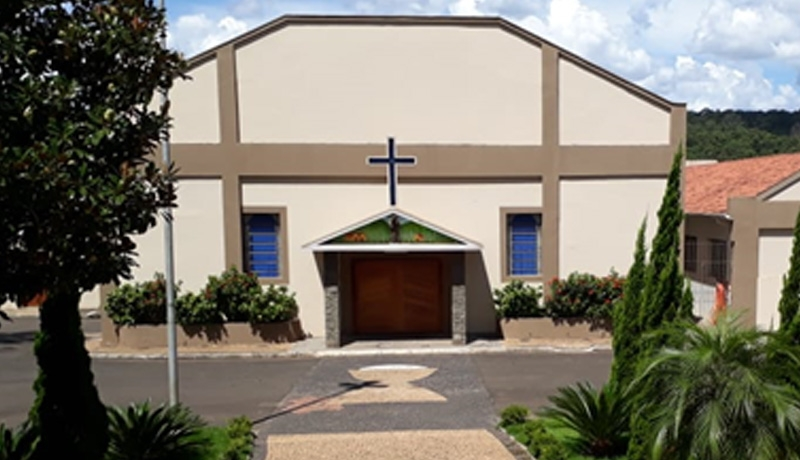

Horários de Missas e Celebrações
Participe de nossas celebrações e fortaleça sua fé. A Paróquia Santo Antônio acolhe a todos em oração e comunidade. Confira abaixo a nossa agenda semanal de missas e outras celebrações.
Horários de Missas na Matriz
Domingo
07h00 | 17h00 | 19h00
Terça-feira
19h30 - Missa com a Novena de Santo Antônio
Quarta a Sábado
19h00
Outras Celebrações
1ª Sexta-feira do Mês
19h00 - Novena perpétua ao Divino Pai Eterno.
Quinta-feira
17h00 às 18h00 - Adoração ao Santíssimo Sacramento.